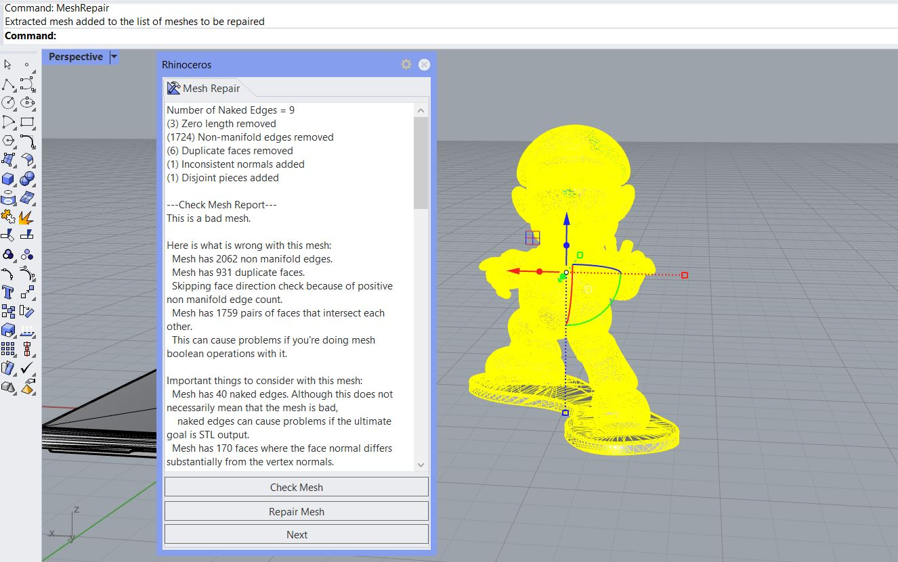
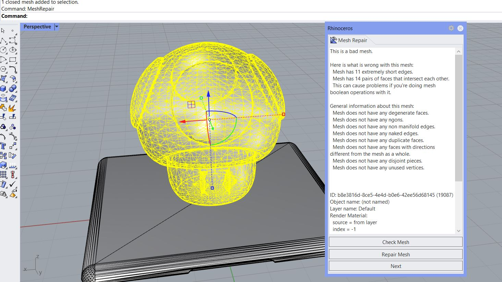
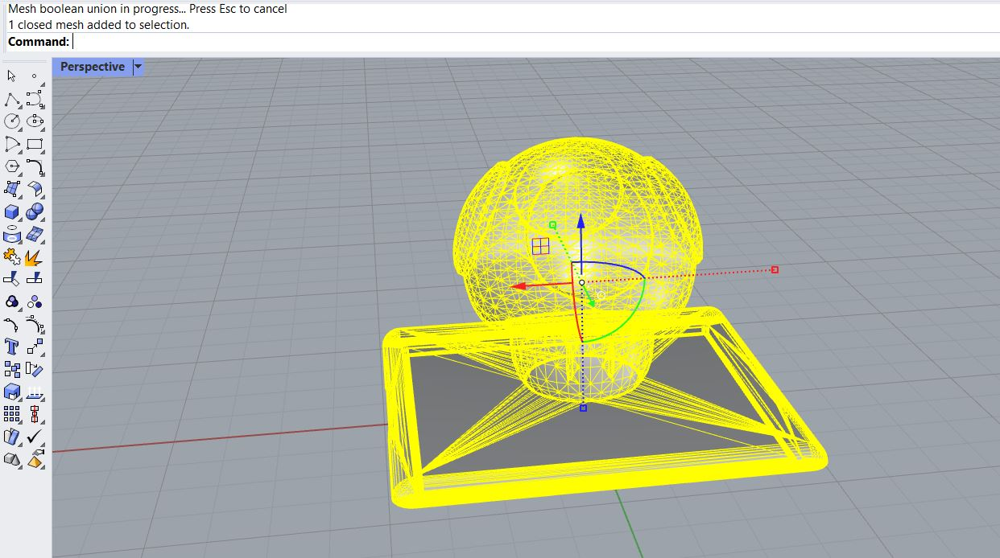
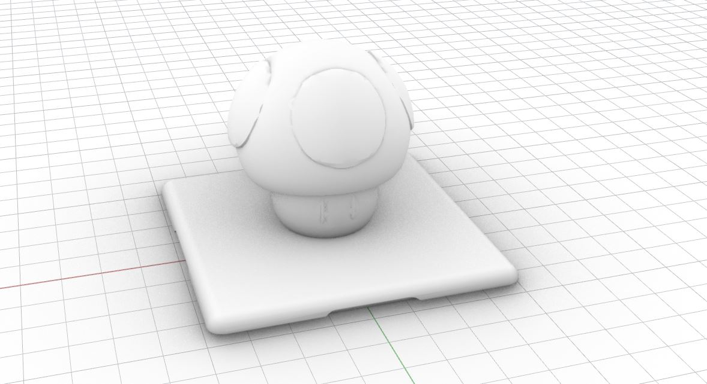
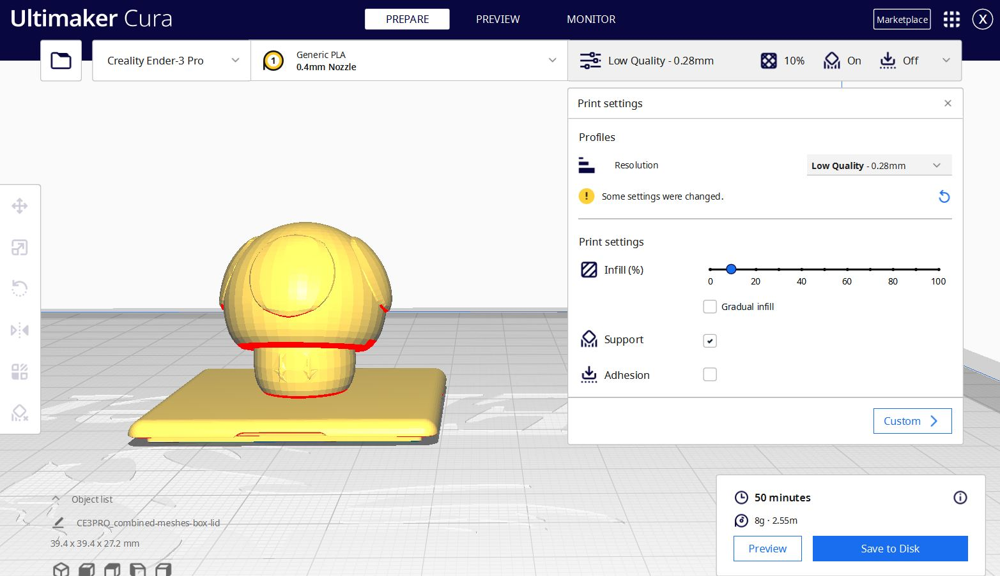

Part 1: Creating a combined STL model in Rhino
For the first part of this assignment, we need to modify the mesh of two STLs into one single printable STL. At first, I found a Question Block Switch Cartridge Case and a High-Res Super Mario on Thingiverse. I tried to clean up the Super Mario model, but eventually I could not make it become a proper printable mesh. Its poly count was too high, and if I brought it down, it lost a lot of the details and simply looked weird.
 The mesh was too complicated and I couldn't quite fix itTherefore, I switched to use the Super Mario Mushroom 1up model. The goal is to combine this model with the lid of the Question Block box. First, I used the MeshRepair command to check the mesh.
And then I tried to see if Rhino can repait it. After running the command twice, here's what Rhino had come out.
I then tried to see if I can further reduce the mesh, although it was already simple enough. Recuding it by 10% made its eyes look a bit deformed, so I opted to not reduce the mesh. Finally, I used MeshBooleanUnion to join the mushroom and the lid into one closed mesh.
 Joining the lid and the mushroom Importing this STL file into Cura to check if it can be properly printed:
Part 2: Prepping for lamps
Attachment
The .stl files and Rhino files can be found here.
Acknowledgements
Thank you to Jun-Chao the TA for recoding the helpful Rhino videos!